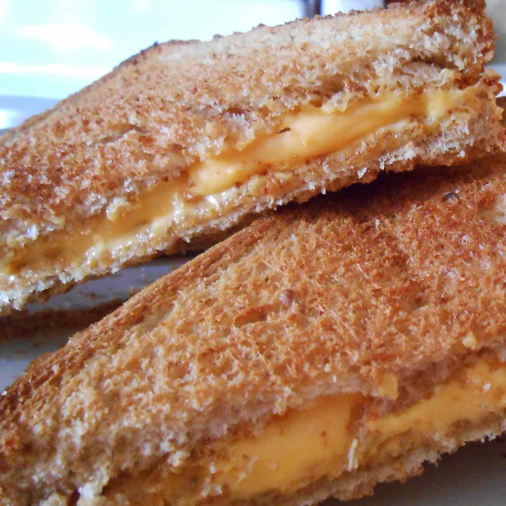

Grilled Cheese

Recipe:
This is a recipe for making several grilled cheeses at once in the oven.
Ingredients:
- 18 slices bread
- 4 tablespoons butter, or as needed
- 9 slices Cheddar cheese
Steps:
- Preheat the oven to 450 degrees F (230 degrees C).
- Butter one side of 9 slices of bread, and place butter-side down on a baking sheet. Arrange cheese on each slice of bread. Spread butter on 9 remaining slices of bread, and place them buttered-side up on top of the cheese.
- Bake in the preheated oven for 6 to 8 minutes. Flip the sandwiches, and bake an additional 6 to 8 minutes, or until golden brown.